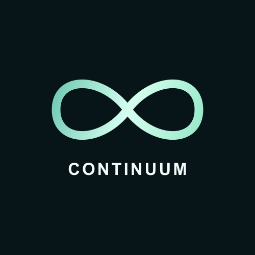

Proposed system diagrams · Work in progress
How the proposed system fits together
Versioned inputs feed artifact context, human relationship review, revision revalidation and current or historical knowledge access.
How the proposed system fits together
PROPOSED SYSTEM · Specification stage · Backend integration is not implemented
SUPPORTED INPUTS
Project files
One selected Git project
Python code
Markdown and plain text
Authored records
Requirements and decisions
Attributed, versioned capture
C-01 / C-02 / C-03
Artifact context
Stable identity, exact versions
Evidence anchors and origin
C-04 / C-05 / C-07 / C-10
Relationship review
Evidence-backed candidates
Human judgment and reason
C-06 / C-07 / C-09
Revision revalidation
Selected Git comparisons
Affected contexts, kept history
C-03 / C-08
Knowledge access
Typed graph and search
Current and historical context
Practitioner workspace
Inspect evidence, review links and retrieve earlier rationale.
re-review
Future frontend integration, preserving the existing design
Conceptual capabilities; framework, storage, authentication and discovery-method choices remain open.
Selected revision pair for comparison
The proposed knowledge continuity cycle
Capture versioned sources, discover candidates, review and retain decisions. Changed versions create new contexts while earlier decisions remain available.
The proposed knowledge continuity cycle
PROPOSED SYSTEM · Specification stage · Backend integration is not implemented
01 / CAPTURE
Capture exact versions
Supported artifacts, sources
and evidence anchors
02 / DISCOVER
Create candidates
Discovered or manually captured
Unconfirmed until human review
03 / HUMAN REVIEW
Review with a reason
Authorized human inspects
versions and evidence
04 / PRESERVE
Retain the decision
Confirm or reject a candidate
Keep actor, time and rationale
05 / COMPARE
Compare selected revisions
Identify supported changes
and directly affected contexts
06 / REVALIDATE
Open new review contexts
Previously confirmed → stale
Never confirmed → candidate
Unresolved → show limitation
Inspect incoming evidence; reconfirm, correct or retire as appropriate
History remains inspectable
Earlier judgments stay attached to their original versions. New review never overwrites that history.
Search and graph access distinguish current context from retained earlier context.
No affected context within declared scope is not proof of complete coverage. Follow-up work stays separate.